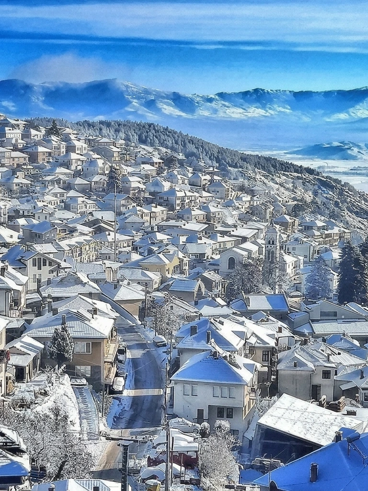
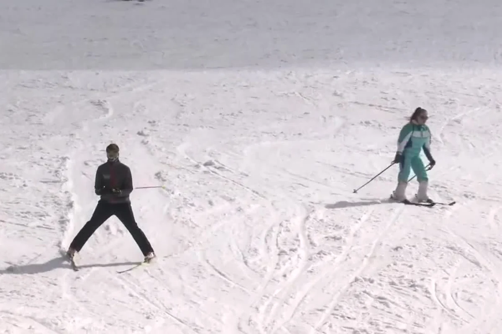
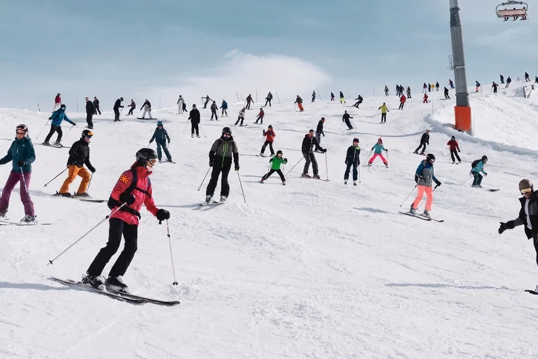
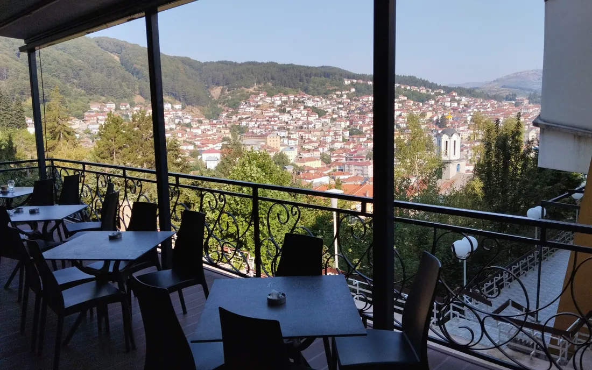
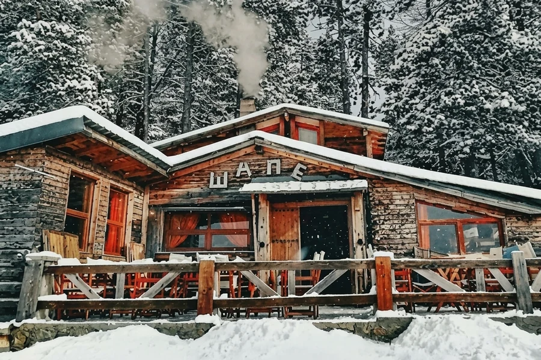
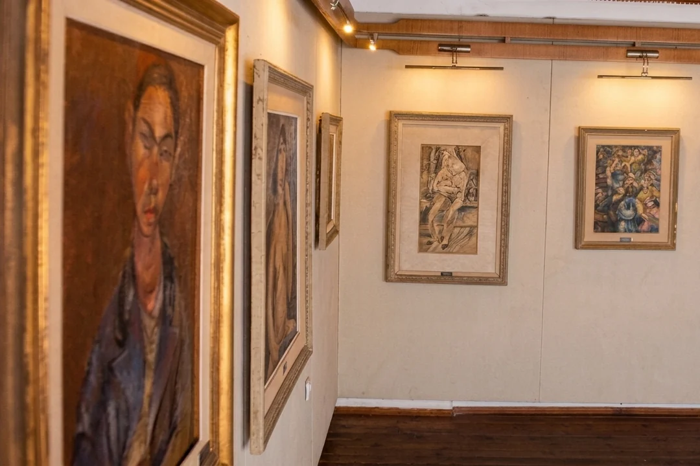
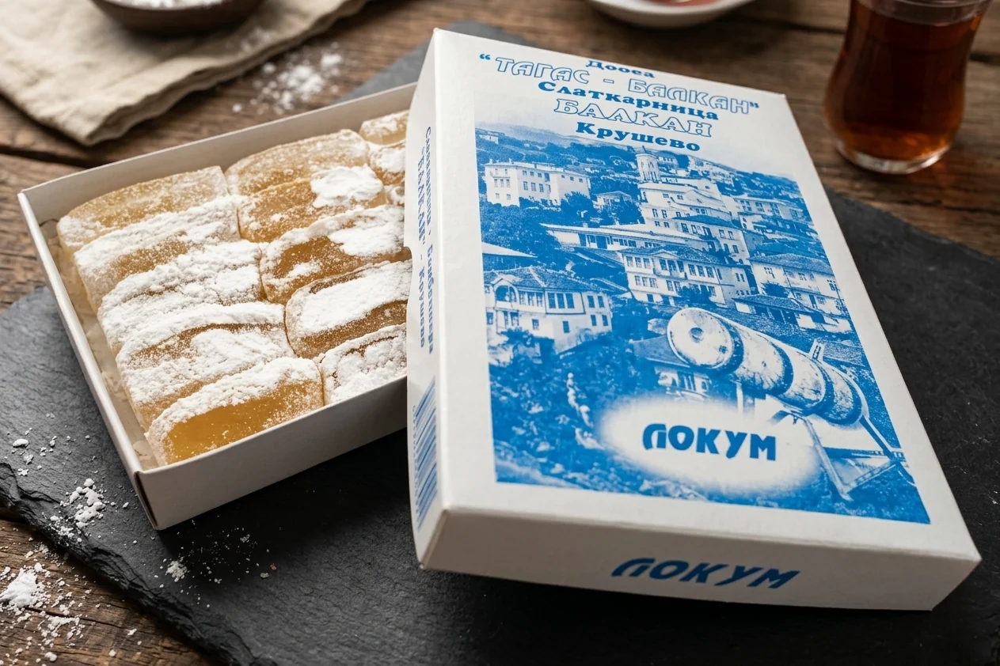
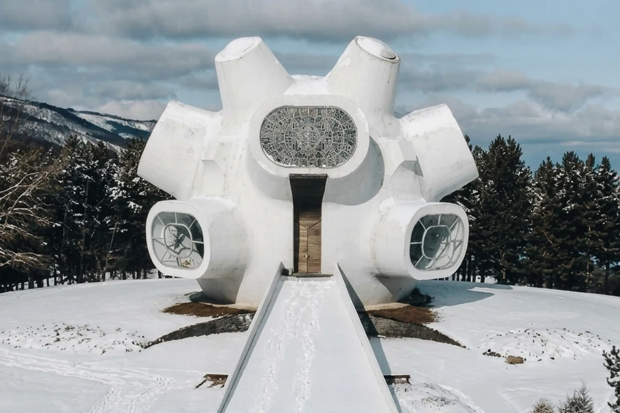
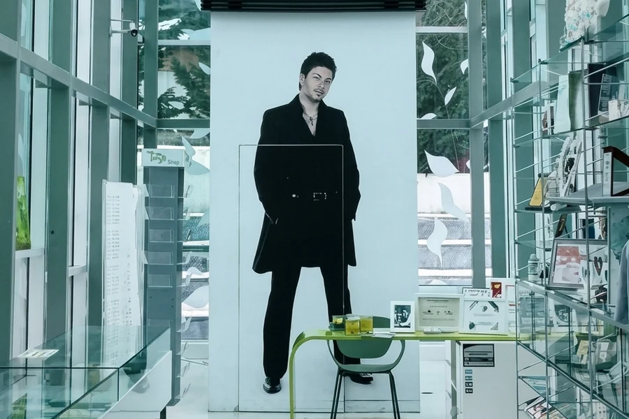

Weekend Guide
Winter in Macedonia’s Highest Town
Take the chairlift to Stanič for skiing and sledding, then head back to town for lunch and the Martinoski Gallery.
In this guide
Skiing and Sledding

Stanič Ski Centre
Buševa Planina
The chairlift starts in town near the Panorama Hotel and climbs through the beech woods to Stanič. There are slopes for beginners and more experienced skiers. If you’re bringing a sled, ask staff where sledding is permitted. Check which runs are open before you go up.
Snow Day

Sledding and Snowboarding
Stanič
Stanič draws snowboarders as well as skiers. Families also come to sled. If you need equipment or a first lesson, check availability before you leave town.
Drinks

Lunch

Šape
Bazaar
Šape has been in the bazaar since 1982. Split a grne (the house earthenware pot) and a plate of kare-kebapi.
Art

Nikola Martinoski Gallery
Tahu house
Martinoski’s portraits hang in the nineteenth-century Tahu house, a few minutes from the bazaar. Two of the rooms are still furnished in the old Kruševo style.
Sweets

Tagas-Balkan
Kruševo
Get the walnut lokum in the blue box with a cannon on it. Try the celuvki too, crisp little meringues made with walnuts or coconut.
Architecture

Makedonium
Gumenje
The path to the white dome runs between colored walls. Borko Lazeski made the stained glass inside. The museum can tell you when the interior is open.
Music

Toše Proeski Memorial House
Gumenje
Toše’s stage clothes, instruments, and a reconstruction of his recording studio are on display at his memorial house on Gumenje.
Two ways to spend a winter weekend
When the lifts are running
Friday
Arrive before dark
Check in, then head to LOK for a drink. Look up the next morning’s lift and slope status before making plans.
Saturday
Chairlift to Stanič
Spend the morning on the slopes or take the kids sledding. Come back down for a grne at Šape or book a table at ALTO.
Sunday
The Tahu house and the bazaar
See the portraits at the Martinoski Gallery, then pick up walnut lokum at Tagas-Balkan before heading home.
When the slopes are closed
Saturday
Paintings and a long lunch
Start at the Martinoski Gallery, have lunch at Šape, and pick up a box of lokum at Tagas-Balkan.
Sunday
Makedonium and Toše
Walk up to Makedonium if paths are clear. Check the museum for access to Borko Lazeski’s stained glass, then visit Toše’s memorial house.
Stay
Bazaar or Panorama
Stay in the old town for the bazaar, or at Panorama for the chairlift and an indoor pool.